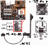
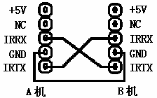
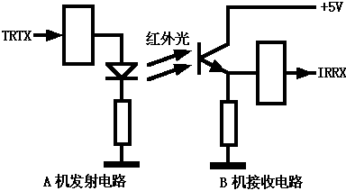
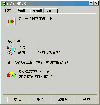
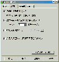
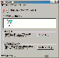
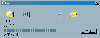

|
|
| 当前位置：电脑报电子版 > 1999 年 > 42 期 > 硬件周刊 > 用红外接口进行资料传输 |
| 《 用红外接口进行资料传输 》 |
| 红外线是可见光谱中位于红色光之外的光线。尽管肉眼看不到这种光线，但利用红外线发送和接收装置却可以发送和接收红外线信号，实施红外线通讯。利用红外线通讯无需连线，只需将两设备的红外线装置对正即可传输数据。红外线通讯方向性很强，适用于近距离的无线传输。 目前市面上出现了不少带有红外线接口的打印机、扫描仪、数码像机、笔记本电脑、掌上电脑，它们均可与台式机进行无线连机通讯。虽然大多数主板均提供有红外线接口，能通过主板红外线接口与上述设备实现红外通讯，但由于市面上很少有红外接口连接器出售，使得大多数计算机的红外线接口闲置未用。为方便台式机与具有红外接口的设备联机通讯，本文简述红外接口连接器及其制作方法，并以微星5168主板为例，讨论在Windows98中使用主板红外线接口连机传输数据的方法。 一、硬件连接 使用红外接口通讯需安装红外接口连接器（如图1），红外接口连接器上安装有红外线发射管、红外线接收管、传输门、几只限流电阻和一只五针插座，用一条两端均有五孔插头的连线，即可连接红外接口连接器和主板红外线接口的五针插座（有些主板红外接口未使用五针插座），连接红外接口连接器和主板红外接口时要注意方向，方问插反会导致主板接口损坏。主板红外线接口五针插座的针脚定义分别为：1＋5V（电源正）、2NC（未定义）、3IRRX（Infrared Receive,红外接收）、4GND（地）、5IRTX（Infrared Transmit,红外发送），有些主板还提供有快速红外接收（Fast Infrared Receive）引脚。 如果你没有红外接口连接器，以下介绍两种简单的连接方法。 1双机三线连机 将A机红外输出端连B机红外输入端，将B机红外输出端连A机红外输入端，再加上一条公共地线，就可以连机通讯了（如图2）。三线连机只是一种利用主板红外线接口连接两台计算机的方法，没有利用红外线通讯。 双机三线互连的两台电脑间有电气连接，使两机间的信号相互干扰，虽然能够进行连机通讯，但实际效果不如使用串口或并口电缆进行的直接电缆连接。 双机三线通过红外线接口连机是笔者实践中使用过的一种方法，但如果你的主板有漏电现象或使用时接错连线，有可能导致主板损坏，请读者实际使用时注意。  2自制红外接口连接器 红外接口连接器实质上是由红外线发射管、红外线接收管、传输门组成的光电信号转换电路，电路设计与实际需要的传送距离有关。红外发送接收器设计方案很多，图3 是一种最简单的电路。这种红外接口连接器隔离了两台红外设备的电气连接，有较好的抗干扰能力，能真正实现红外线传输。 家庭用户自制红外接口连接器，可取用机械鼠标中的两对光电发射管和接收管（注意鼠标中的光电发射接收管可能不是红外线发射管和接收管，性能不太好，使用时注意避免其它光线干扰），传输门可使用一般的CMOS门电路（如CD4071）。如果要求有较远的发送距离，可选用功率较大的红外线发射管和CMOS功率传输门（如CD4050），减小红外线发射管的限流电阻，即可改变红外线发射管的电流，从而增大发射功率。 二、红外接口BIOS设置 使用主板红外接口需在BIOS的“INTEGRATED PERIPHERALS”子菜单中将“UART2 Use Infrared”项设置为IrDA，开启此项后系统将启用主板的红外传输功能，并将主板的 COM2设置为红外线传输接口。1．UART（Universal Asynchronous Receiver/Transmitter）的含义是通用异步接收发送器。一般主板上集成两个UART。 2．不同主板BIOS的 “UART2 Use Infrared” 设置项内容不一定相同，如在微星5168主板的BIOS中，“UART2 Use Infrared” 设置项中有Standard、ASKIR、HPSIR三个选项，选择“ASKIR”即可使用主板红外通讯接口。 3．选择IrDA选项后，其下还会出现两个新的选项，其中“IR Function duplex” 设置项中有“Full”和“Half”两个选项，“RxD，TxD Active”设置项中有“Hi，Hi”、“Hi，Lo”、“Lo，Hi”、“Lo，Lo”四个选项，大家可根据实际通讯情况进行选择。在笔者实际使用时，这些选项的选择对数据传输的影响不大。 4．主板红外线传输接口借用异步通讯接口传输数据，最高传输速度为115.2Kbps。 5．将“UART2 Use Infrared”选项设置为红外线传输接口，主板COM2接口将会失去作用。 三、软件和协议安装设置 BIOS设置完毕启动Windows98时，系统提示找到新硬件，要求插入Windows98安装光盘，并会自动安装以下内容：1．“控制面板/系统”中，增加了 “红外线监视器” 图标，同时开始菜单的任务栏右侧出现“红外线监视器”快捷图标。 2．“控制面板/系统/设备管理”标签中的设备列表框中，增加了“虚拟红外线并行（LPT）端口、虚拟红外线串行（COM）端口、红外线通讯设备和Infrared PnP Serial Port（即插即用红外线串行端口）”等四个条目（如图4），但原来存在的串行端口COM2消失。 3．“控制面板/网络/配置”标签的列表中（如图5）增加了“Infrared PnP Serial Port”和“快速红外线传输协议”，选中“Infrared PnP Serial Port”，按“属性”按钮，你会发现该接口绑定了“快速红外线传输协议”。 4．“我的电脑”中增加了“红外线接收者”图标，“红外线接收者”是Windows98提供的专用于进行数据传输的应用程序。 说明：如果有非即插即用设备占用了COM2（或COM3），系统将无法发现“Infrared PnP Serial Port”，也无法安装上述内容。 四、红外线监视器 “红外线监视器”是Windows98提供的设置、检测、监视计算机系统红外线活动状态的应用程序。在“控制面板/系统”中双击“红外线监视器” 图标，即可打开“红外线监视器”。“红外线监视器”窗口共有“状态”、“选项”、“首选项”、“认证”四个标签，其内容分述如下：1．“状态”标签 “状态”标签中显示有效范围内的红外线设备。如果系统正在进行红外线通讯，标签还显示当前的传输对象、传输速度、传输质量等通讯状态。 2．“选项”标签 “选项”标签中有四个复选框（如图6），其中“启动红外通讯”复选框选中后系统启动红外通讯，该复选框下给出了红外通讯启用的COM和LPT通讯端口；“搜索并提定有效区域内设备的状态”复选框用于指定系统是否搜索有效区域内的红外设备，如果选择了此复选框，则“红外线监视器”的状态属性和任务栏会显示有效区域内的红外设备及其状态；“连接速度限制为”复选框选中后可在其后的选择框中选定红外通讯的速度限制，选择项中有2400bps～115.2Kbps等通讯速度限制选项；“安装有效区域内的即插即用设备软件” 复选框选中后，新的红外即插即用设备进入有效区域后，系统将自动为其安装设备驱动程序。如果你的红外设备不是即插即用设备，需通过“控制面板/添加新硬件”安装；如果你不想安装经常进入有效区域的红外设备，请不要选择此复选框。 3．“首选项” 标签 “首选项”标签中有三只复选框，其中“在任务栏显示红外线监视器图标”复选框决定是否在任务栏显示红外线监视器图标；“当通讯中断时，打开红外线监视器”复选框选中后通讯中断时系统会自动显示对话框，通讯恢复时系统将自动关闭该对话框；“设备在有效区域内及通讯中断时播放声音”复选框选中时，当红外设备进入有效区域、移出有效区域和通讯中断时系统会通过PC喇叭（或声卡）给出声音提示。 4．认证”标签 “认证”标签中有“计算机名”和“计算机说明”两个输入框，“计算机名”输入框用于输入当前计算机的识别名称，“计算机说明” 输入框用于输入当前计算机的简单说明，如果计算机已上网，输入框中的内容与“控制面板/网络”属性中的内容相同，该名称有助于其它红外设备和网络用户识别当前计算机，如果更改了输入框中的内容，“控制面板/网络”属性中的内容也会作相应的变化。 五、红外通讯的准备工作 实施红外线接口通讯需做好以下准备工作：1．设备放置 实施红外通讯，必须确认已经打开系统的红外通讯功能，相应红外设备已放置在可以互相发送、接收红外线的区域内，设备应大致面对面放好，距离不得超过一到三米。由于红外设备发出的光线以锥形模式传播，因此两红外通讯设备必须面对面放置，实际的角度限制与设备的红外发送、接收装置有关，但大多保持在约30度的锥形范围内。常规红外接口连接器的正常发送、接收距离为一到三米，如想增大发送、接收距离，需采用特殊的发送、接收装置，如加大红外发送功率即可增加发送距离。 2．检测通讯设备 在“红外线监视器”的“选项”标签中（如图7），选中“启动红外通讯”复选框和“搜索并提定有效区域内设备的状态”复选框，并确认选定了设备搜索选项和搜索时间间隔（如三秒）。单击“应用”按钮后，系统即开始检测红外通讯设备，并在“状态”标签中显示当前进入有效区域内的红外设备。 当“红外线监视器”的“状态”标签中显示出通讯设备已连机的信息后，你就可以进行红外线通讯了。 六、文件传输 “红外线接收者”是Windows98提供的专用于进行数据传输的应用程序。当红外通讯对象（如另一台计算机）进入有效范围内时，“我的电脑”中“红外线接收者”图标就已经标识出通讯对象的名称，此时双击“红外线接收者”图标，即可打开“红外线传输”窗口进行文件传输（如图8）。“红外线传输”操作界面中有“发送文件”按钮和“已收到文件”按钮，选择“发送文件”按钮，指定所需发送的文件后，系统即开始发送文件。发送文件过程中，系统会弹出“发送文件”窗口（如图9），该窗口中显示正在发送文件的情况和还需要的发送时间。如通讯过程中发生通讯中断故障，“红外监视器”的“状态”属性栏开始倒计时，在倒计时结束之前，如果恢复通讯，将不会丢失传输的数据。接收文件完毕，选择“已收到文件”按钮即可看到接收到的文件。 七、小结 使用红外线通讯的主要优点是无需连线即可传输数据，简单方便。两连机设备之间无电气连接，安全性好。此外使用红外线通讯具有一定的保密性。使用主板红外线接口较为适合与笔记本电脑、掌上电脑、打印机等设备连机通讯。使用主板串口的红外线接口功能很弱，通讯速度较慢，远不如网卡组成的网络设备，双机互连甚至不如使用串口或并口电缆。与扫描仪、数码像机等需要进行大量数据传输的设备进行红外通讯不能使用主板红外线接口，需使用专用的红外接口装置。 最后说明本文仅为实践心得，不当之处，敬请指正。如果你有相关问题，请来函（beky@ynmail.com）讨论。 |
| 下载本期推荐软件 | 页 首 |
| 《电脑报》版权所有，电脑报网站编辑部设计制作发布 |
{kind=link}